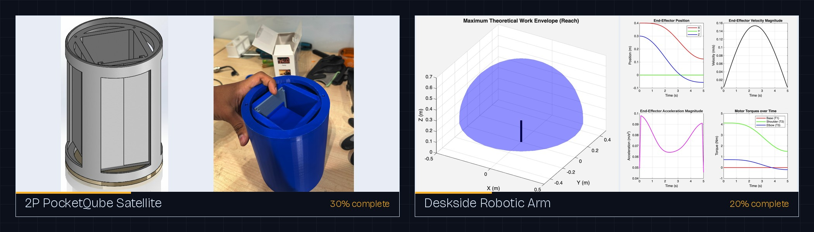
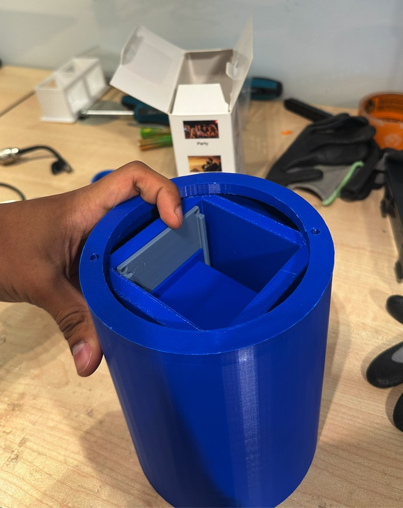
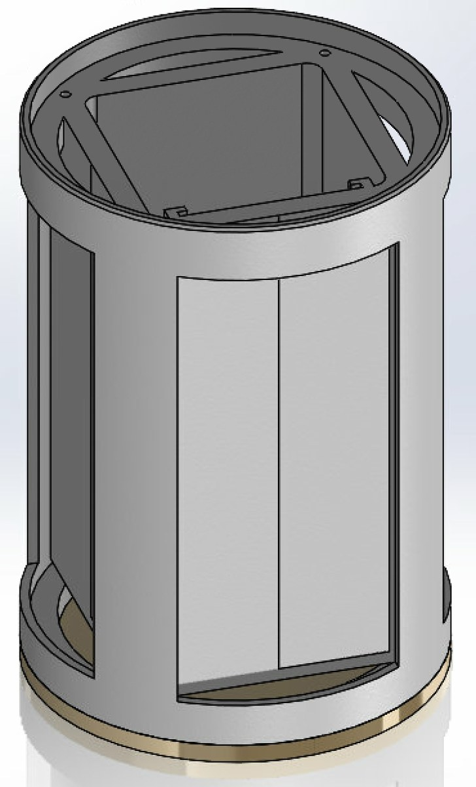
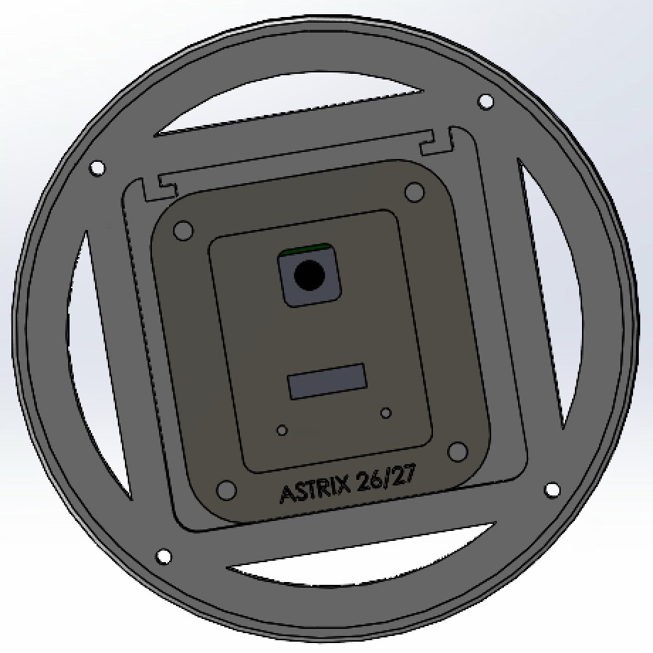
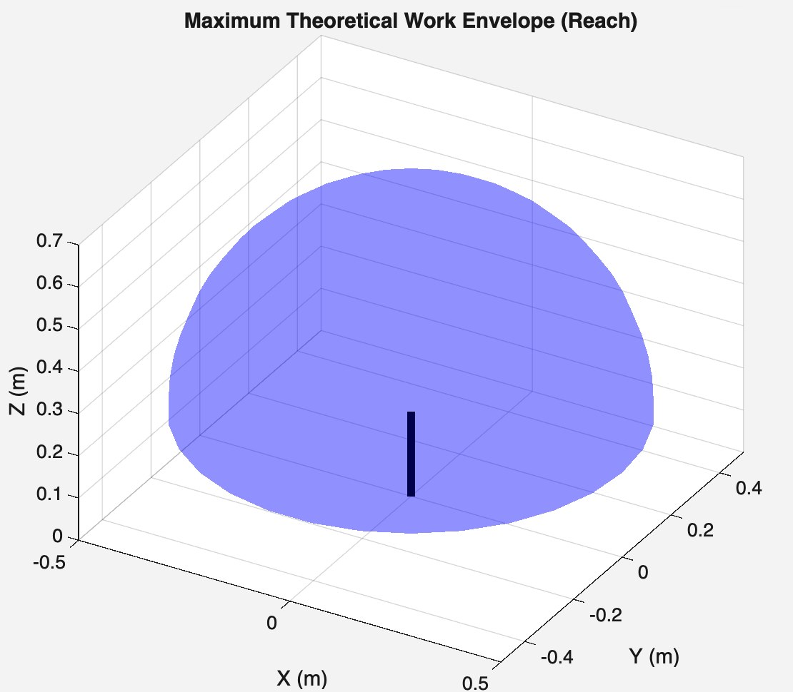
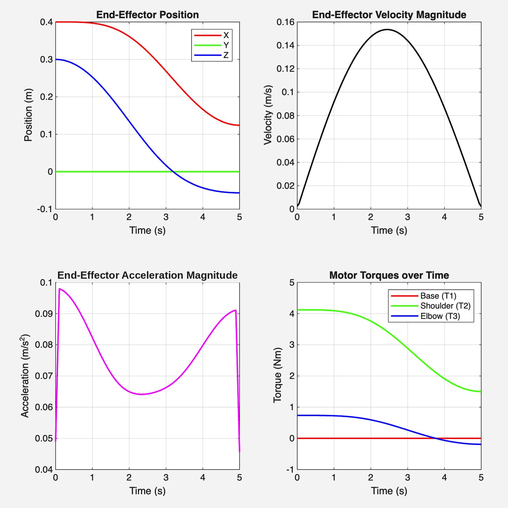
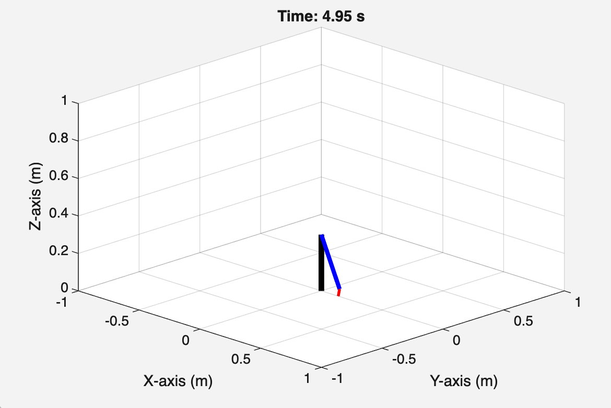

On the bench right now
Upcoming projects
Two projects I'm building right now: one with a team of ten, one on my own desk.

2P PocketQube Satellite
A satellite I am making for the American Astronautical Society CanSat Competition. I lead the satellite structures team and work with a team of 10 people. It will be launched and will collect 5 types of data using different microsensors and solar panels.
30% completeProgress so far
- Weight and fit test: I 3D-printed a test piece to check the weight and how the PocketQube fits on its rails.
- Weight reduction: the design now has material cut away in many places so the structure meets the weight requirement.
- Internal layout: I redesigned the inside with compartments for the electronics and the parachute.
Structure design

3D-printed test piece for the weight and fit test on the rails.

Updated structure with material cut away to reduce weight.

Top view of the new internal layout, with compartments for the electronics and parachute.
Homemade Deskside Robotic Arm
A desk-clamped robotic arm. Before spending money on parts, I wrote MATLAB scripts to size the arm and test its motion on paper. The design inputs were a 0.5 m reach, a 0.5 kg payload, and the 1.17 Nm motors I already had.
20% complete1. Are my motors strong enough?
The design script (designer.m) splits the reach between the links, estimates each link's mass, and calculates the worst-case torque at every joint with the arm fully horizontal. It then compares that with the torque my motors can give.
What it shows
The base joint passes with a good margin. The shoulder needs 3.71 Nm and the elbow 1.42 Nm, but my motors give 1.17 Nm.
What it proves
These motors would have been the wrong purchase. The shoulder is the critical joint, with a safety factor of about 0.3, so it needs much more torque or gearing.
2. Where can it reach?

Theoretical work envelope: a 0.5 m reach hemisphere above the 0.2 m base post.
The envelope is every point the tip could reach if each joint could move through its full range. It lets me check that the useful desk area sits inside the reach, and see how far up and out the arm can go. Because it is an upper bound that ignores joint limits and self-collision, the real workspace will be smaller. It is a quick check on link lengths before any CAD is done.
3. How will it move?

A 5-second shoulder and elbow move: position, velocity, acceleration and torque.
Position
X falls from 0.40 m to 0.125 m and Z from 0.30 m to -0.057 m. Z ends below the base plane, so this test path would push the tip into the desk. I can fix that in software before cutting any metal.
Velocity
A smooth arc that starts and stops at zero, peaking near 0.15 m/s. There are no jerky starts, and the joint speeds are only 2 to 3 RPM.
Acceleration
Below 0.1 m/s², so inertia adds very little load. Gravity, not motion, sets the torque I need.
Torque
The shoulder peaks at about 4.1 Nm at the start, when the arm is most extended. The elbow peaks at 0.74 Nm and changes sign, so it must hold in both directions. The base is 0 Nm because this test does not rotate it.

3D animation frame at 4.95 s.
The animation checks the kinematic chain by eye: link order, joint-angle signs, and whether the arm moves the way I intended before I trust the numbers.
4. Which motors do I buy?
The motion script (mapping.m) turns the torque and speed graphs into a specification for each joint, with a motor type recommended from the peak torque.
Speeds of only 2 to 3 RPM mean torque, not speed, is the constraint. That points to geared, high-torque motors for the shoulder, rather than a bigger stepper running directly.
The maths in MATLAB
Trajectory and forward kinematics
Each link position is built from the one before it, using the joint angles. Differentiating the end-effector position gives the velocity and acceleration graphs above.
Torque and safety factor
Each joint must hold everything beyond it, so torque is the weight of each link at half its length plus the payload at the tip, multiplied by gravity.
What this saved me
- The 1.17 Nm motors I already had would not lift the arm. I found that on paper, not after buying more parts.
- Two scripts with different assumptions both put the shoulder at roughly 4 Nm (3.71 Nm and 4.12 Nm), which gives me confidence in the number.
- The shoulder motor and its gearing are the main cost and the main design risk.
- The test trajectory needs adjusting so it does not dip below the desk.